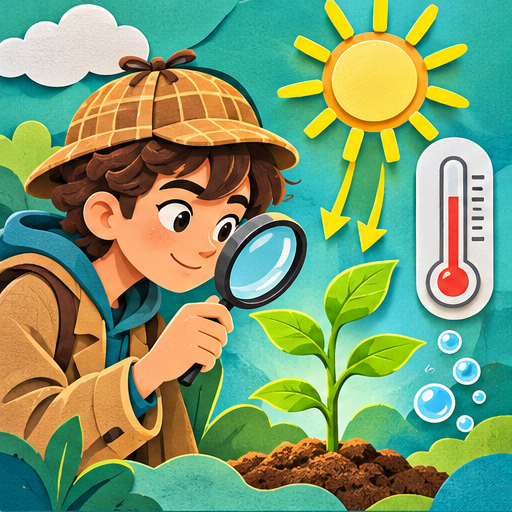
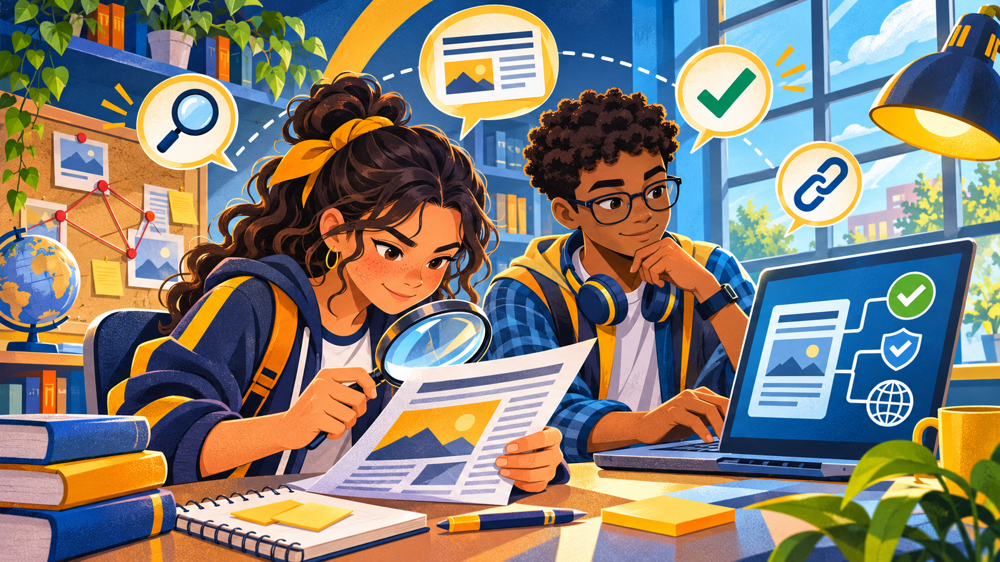
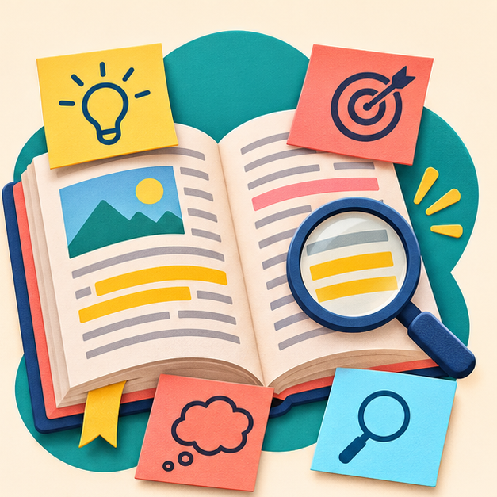
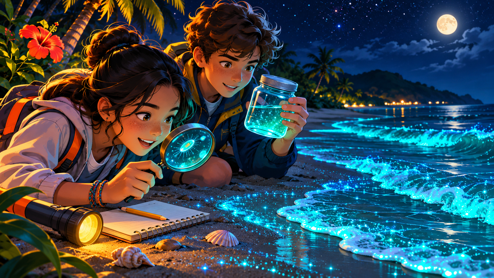
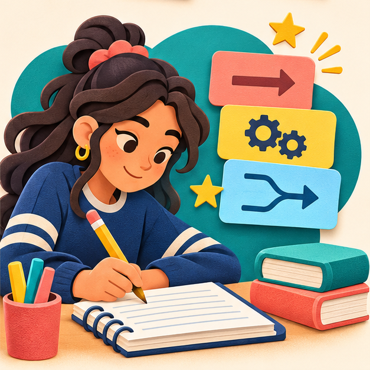

Aula virtual › Inglés · Grado octavo · A2
THE DIGITAL READING DETECTIVE LAB · A2
01 / 06Before the investigation, explore your detective toolkit
Preview the English topics you will use to solve the reading cases.
Ready to investigate the cases?
LABINNOVA · DIGITAL READING DETECTIVE LAB
Welcome, Detective!
Your mission: investigate online information, find clues and decide which sources you can trust. Are you ready to solve the case?

READ · THINK · INVESTIGATE
THE LEARNING CHALLENGE
Problem to be solved
Difficulty among eighth-grade students in comprehending expository and narrative texts in English (A2 level), evaluating the reliability of digital sources, and applying active reading strategies (skimming, scanning, inference) in virtual environments, highlighting the need for a structured web environment that guides the learning process.
THE PURPOSE OF THIS RESOURCE
Purpose of the Resource
To design and develop an educational website from scratch that acts as a virtual research laboratory. Its purpose is to structure the teaching of digital reading through different tabs and multimedia modules, improving reading comprehension and critical writing in English.
0 / 2cases solved
0 XPdetective points
A2 · Grade 8your mission level
MISSION BRIEFING · WARM-UP
Can you spot fake news?
2 MIN VIDEO
Watch your detective’s welcome message and learn your mission.
Welcome video goes hereReplace with your YouTube video in Settings → Media & links.
Audio button · accessible instructions
Mission instructions
Hello, detectives! Today we investigate information on the internet. Read carefully, find clues, and check the author, date and evidence. Do not believe every headline. Let us solve the case together!
THINK · PAIR · SHARE
Mission warm-up

💬 Reflection question
“What fake news did you see on social media recently? Why do you think people believe it?”
Use simple words. You can write in English or Spanish.Your reflection is saved on this device.
INPUT & SCAFFOLDING · CEFR A2
The Lab Guide
Learn the tools, practise the language, then use them to investigate each reading case.
INFOGRAPHIC
Open Canva infographic ↗3 active reading strategies
 Open the infographic image in a new tab ↗
Open the infographic image in a new tab ↗01
SKIMMING
Read quickly for the main idea.Look at the title, pictures and first sentences. Ask: “What is this text mostly about?”
QUICK LOOK → BIG IDEA02
SCANNING
Look for a specific detail.Search for a name, date, number or place. Move your eyes quickly across the text.
QUESTION → FIND A DETAIL03
PREDICTION
Guess before you read.Use the title and pictures. Say what you think the text is about, then read to check.
TITLE + PICTURE → A GUESSMIND MAP
Open Canva mind map ↗How can I check a source?
 Open the mind map image in a new tab ↗
Open the mind map image in a new tab ↗🛡️CHECK
THE SOURCE
THE SOURCE
👤 AUTHORWho wrote it?
Is the author an expert?
Is the author an expert?
📅 DATEWhen did they
publish it?
publish it?
🌐 SOURCEIs the website
known and trusted?
known and trusted?
🧾 EVIDENCEAre there facts,
data or proof?
data or proof?
VIO · LANGUAGE INPUT
Connect ideas
Use these connectors to explain reasons and contrast ideas.
BECAUSEgives a reason · porque
The story is popular because it has a surprising headline.
HOWEVERshows a different idea · sin embargo
The photo looks real. However, the date is old.
THEREFOREshows a result · por lo tanto
The author is an expert. Therefore, the article may be reliable.
Interactive presentationOpen the uploaded PDF preview or the Canva version.
GLOSSARY · FLASHCARDS
10 key words
Tap a card to see its meaning. Press 🔊 to hear the pronunciation.
🖼️ Image placeholders: replace with your own vocabulary pictures or Quizlet / H5P cards.
STUDY GUIDE
⬇ Download PDFGrammar quick review
Open the complete study guide here, or download a copy to study offline.
Present Simple · facts
Use it for facts, habits and scientific information.
Water boils at 100°C.
Plants need sunlight.
She checks the source.
Plants need sunlight.
She checks the source.
Past Simple · biographies
Use it for finished actions in the past.
Ada Lovelace was born in 1815.
She studied mathematics.
She wrote notes about a machine.
She studied mathematics.
She wrote notes about a machine.
Give your opinion
Use a clear sentence starter and a connector.
I think this article is reliable because it has an expert author. However, I want to check another source.
PRACTICE & GAMIFICATION
Reading Cases
Two short A2 readings. Annotate clues, practise skimming and scanning, and check claims before you believe them.
DISCERNMENT CHALLENGE
🎮Fact or unverified claim?
Drag each headline into the best category. A headline alone is not proof!
✅ SUPPORTED FACTA checkable statement with evidence
⚠️ UNVERIFIED CLAIMNeeds a source or more evidence
Sort all headlines to see your score.
BONUS QUIZ · KAHOOT
🌊Beaches that glow

Investigate the mystery of bioluminescence in this interactive quiz.
Open Kahoot quiz ↗PHASE 2 GAME
🧩Extra investigation
External game link goes hereAdd the next Educaplay, Kahoot or Genially link in Settings.
OUTPUT & ASSESSMENT
Writing Vault
Show what you understand. Summarize the article in 3–4 sentences and give a critical opinion using because and however.

PLATFORM WRITING CHALLENGEWrite your detective report
✍️ Your mission
“Summarize the article's main argument in 3-4 sentences and give your critical opinion using 'Because' and 'However'.”
Write in English. Include the main idea, one detail and your opinion.Sentence startersThe article is about...One important detail is...I think this article is reliable because...However, I want to check...
0 words · aim for 40–80 words
Check your English
Review spelling and connectors before you submit your final report.
LanguageTool / QuillBot link goes hereAdd the grammar checker link in Settings.
MY DETECTIVE FILE
Progress
Your saved cases, practice points and writing report.
Case record
Reading cases solved0%
Writing Vault
No report saved yet.
MY DESK
Settings
Connect your student account and add media links when they are ready.
Replace placeholders
Add links later. Keep fields empty until you have the final links.
Student account
Sign in to sync your progress across devices.
Learning preferences
The audio player uses browser speech synthesis; replace it with your recorded audio link when ready.
Accounts & cloud progress
Use the supplied supabase-setup.sql file in Supabase SQL Editor, then paste the project URL and public browser key here. Never paste a service-role or secret key.
DRDL · STUDENT ACCOUNT
Access your detective file
Create an account to save your cases across devices.
Connect a Supabase project in Settings to enable real accounts.
Do not share your password. Student progress is private to the signed-in account.